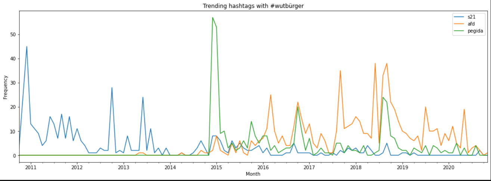
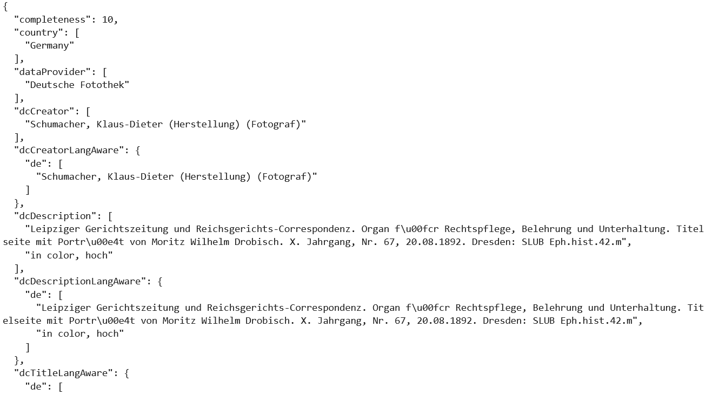
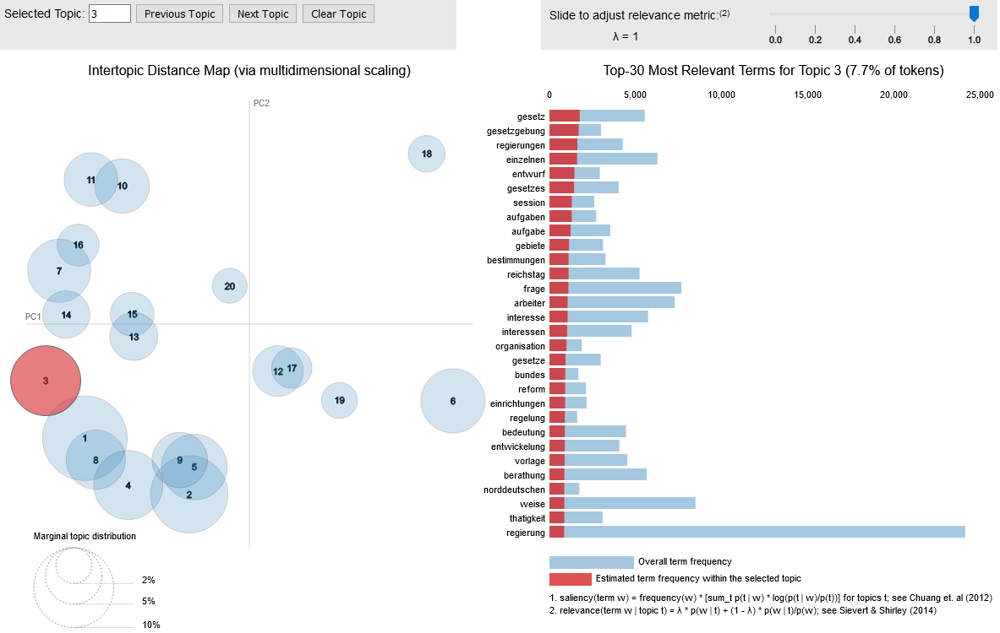

Contents
Historie, Konzepte, Einsatz¶
Warum Python?¶
einfach zu lernen
einfach zu lesen
riesige Community
viele Bibliotheken verfügbar
laut TIOBE im Jahr 2020 auf Platz 3
Open Source Software
Entwicklung¶
zu Beginn der 1990er-Jahre von Guido van Rossum entwickelt
1994 erschien die Version 1.0
ursprünglicher Zweck: Programmieren vermitteln
Name geht nicht auf die Schlange, sondern auf Monty Python zurück
Dezember 2008: Version 3.0 -> vollständig auf Unicode umgestellt
aktuelle Version Python 3.9.2
30 Jahre Python¶
offizieller Startschuss fiel am 20. Februar 1991
Python als Skriptsprache¶
interpretiert
höhere Programmiersprache
Python-Skripte erkennbar an der Endung:
skript_name.pyJupyter Notebooks erkennbar an der Endung:
notebook_name.ipynb
Einsatzgebiete I¶
Universitäten und Forschungseinrichtungen
Technologie-Branche
Industrie
Data Science
Einsatzgebiete II¶
Data and Text Mining
Daten-Analyse
Visualisierung
Web Entwicklung
System-Administration
Rapid Prototyping
Anwendungsbeispiele für HistorikerInnen¶
Twitter Mining¶

Metadaten-Abfrage¶

Topic Modeling¶

Netzwerkanalyse¶